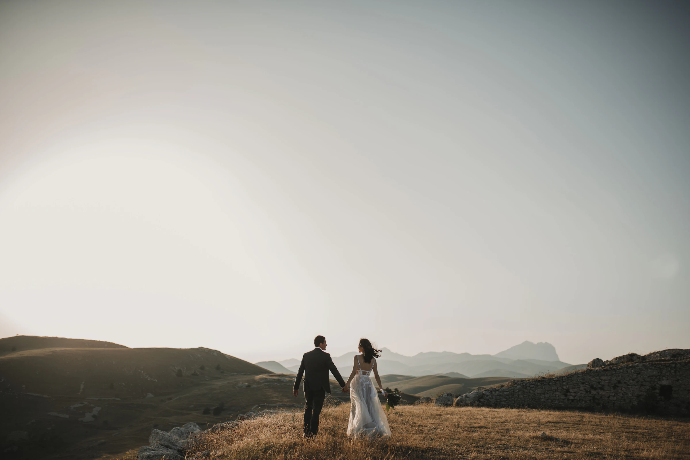
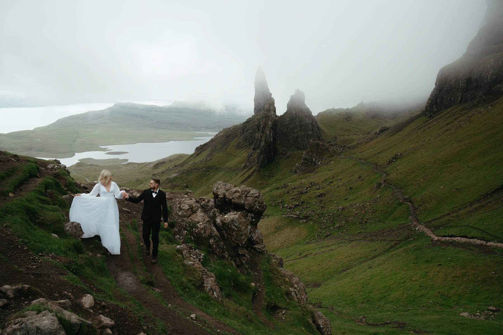
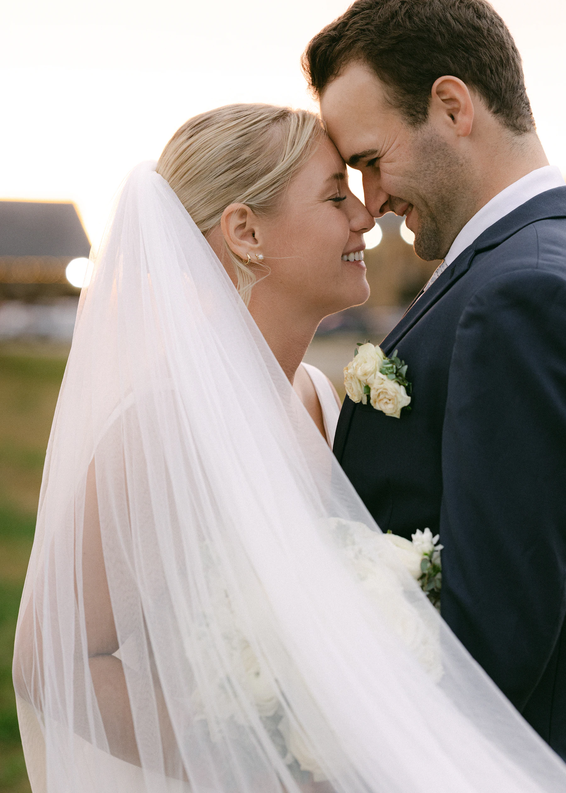
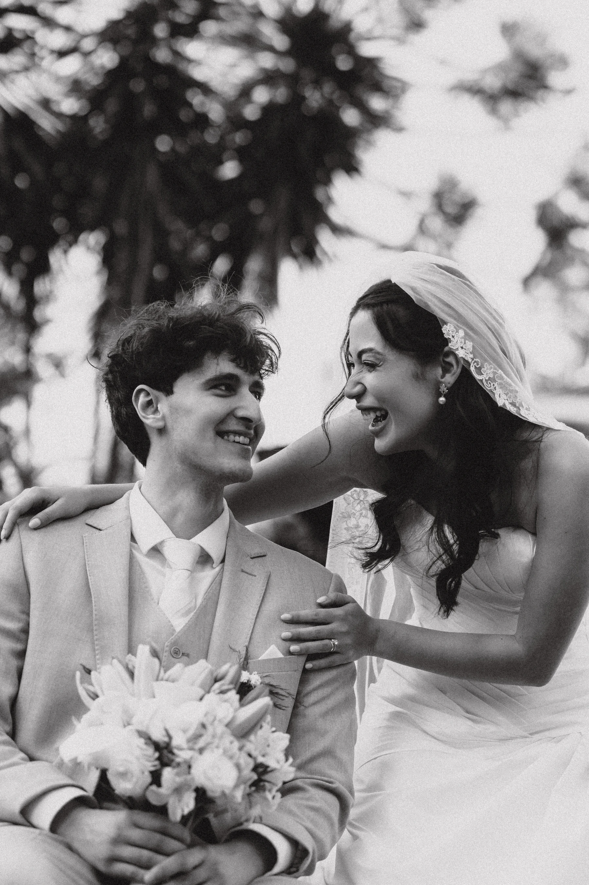
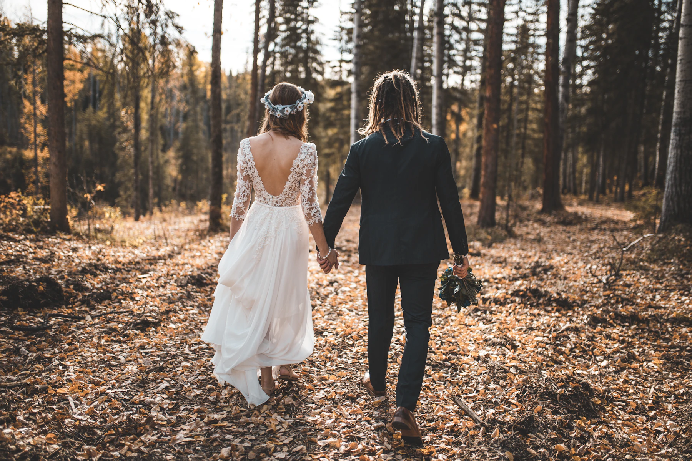
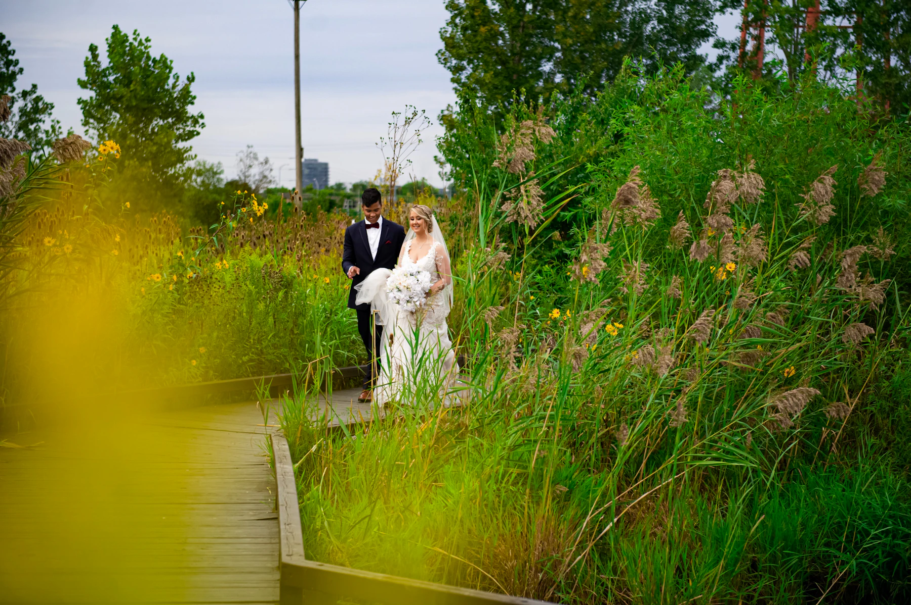

ISAAC PHOENIX
WEDDING PHOTOGRAPHER
DE CÁDIZ Y MEDIO PLANETA.
ABRIR EL FOTOLIBROEdición visual ilustrativa · Fotografías de otros autores; no pertenecen al portfolio de Isaac Phoenix.
UNA HISTORIA SE VIVE. UNA FOTOGRAFÍA SE QUEDA.
Hay momentos
que merecen
quedarse.
El tiempo pasa. Una mirada, un abrazo, la luz de aquel día: la fotografía guarda lo que la memoria quiere volver a sentir.
01 / SECUENCIAS
The wedding
stories.
Un recorrido por la emoción.
Sin prisa. Fotograma a fotograma.
Selección ilustrativa de Unsplash. No son reportajes de Isaac Phoenix. Autoría indicada en cada imagen.

Todo empieza
con una mirada.


ENTRE FOTOGRAMAS
Lo que sucede
entre los grandes
momentos.
Un gesto apenas visible.
Un paso compartido.
La vida, mientras sucede.

EL PUNTO DE PARTIDA
Cádiz.
Y medio
planeta.

Desde El Bosque, Cádiz.
UNA CONVERSACIÓN PARA EMPEZAR
¿Hablamos de
vuestra historia?
Contacta con Isaac Phoenix para consultar información sobre fotografía de bodas.
Isaac Phoenix
Bda. de la Feria, 3411670 El Bosque, Cádiz
Fotografía de bodas · El Bosque · Sierra de Cádiz